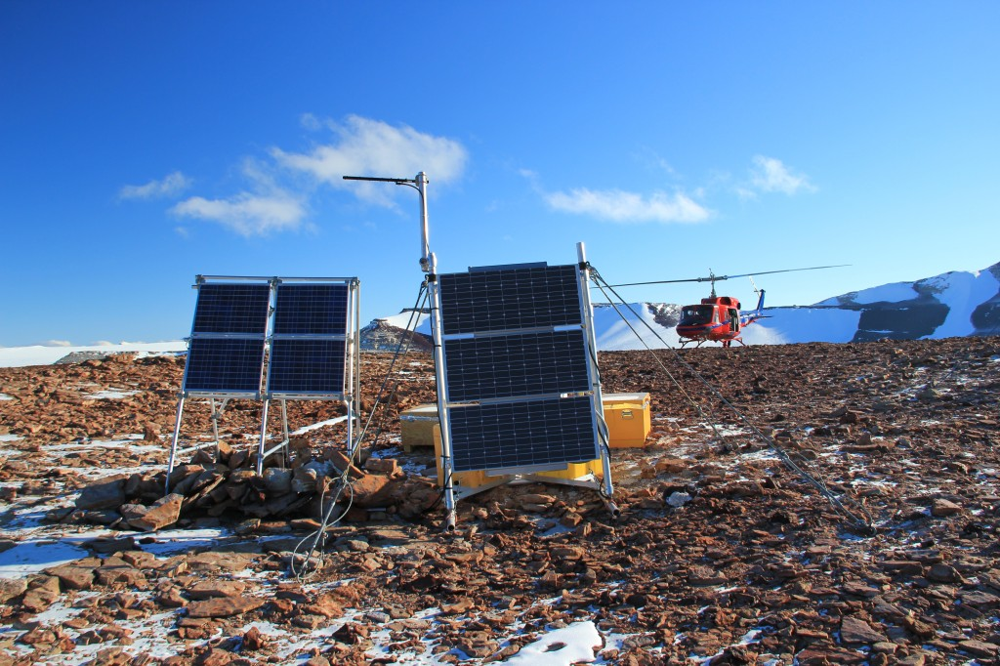

Back to all sites
Mount Fleming
| Station ID | FLM5 |
|---|---|
| Coordinates | S 77.5327, E 160.2714 |
| Installed | 2006-2007 season |
| Former Projects | TAMDEF |
| Former Names | FLM2 |
| Transportation | Helicopter |
| Nearest Hub | 156km to McMurdo Station |

Coordinate: S 77.5327, E 160.2714
Closest operations HUB: 156km to McMurdo Station
Mountain, over 2,200 m, standing at the SW side of Airdevronsix Icefalls and Wright Upper Glacier, in Victoria Land. Named in 1957 by the N.Z. Northern Survey Party of the CTAE (1956-58) for Dr. C.A. Fleming, Senior Paleontologist of the N.Z. Geological Survey, and Chairman of the Royal Society's Antarctic Research Committee (https://data.aad.gov.au/aadc/gaz/scar/display_name.cfm?gaz_id=125187).